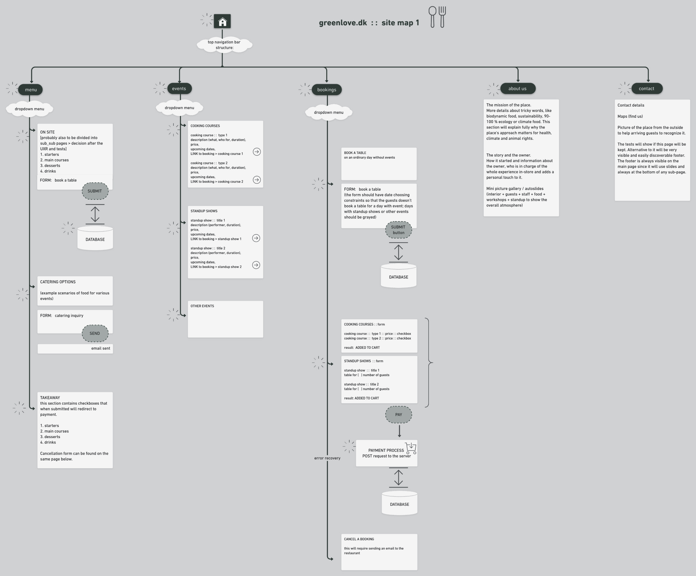
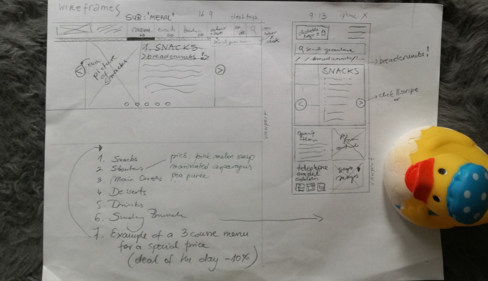
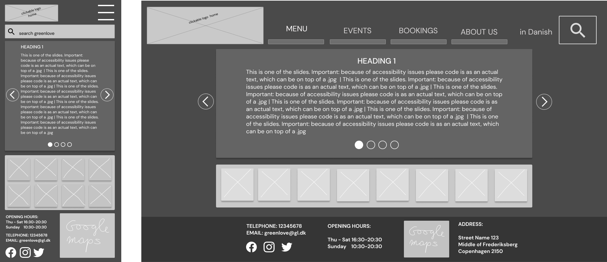
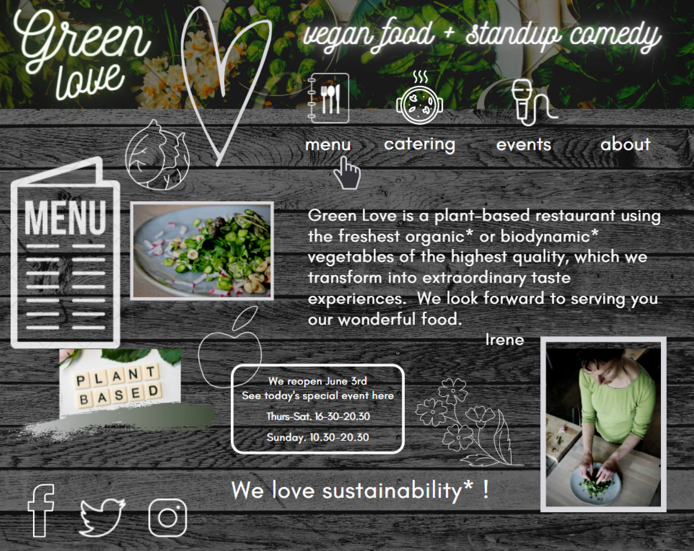

A full audit of a restaurant's website in terms of usability, information architecture, narrative and visual
aesthetics, which resulted in full redesign and rebranding.
1. Identify and fix (whenever feasible) the most important pain points by empathising with the user's needs to
improve the overall experience.
2. Identify business goals and make sure the website achieves them.
3. Merge the two above into a sensible compromise.
METHODOLOGY HIGHLIGHTS
The Double Diamond 💎💎 with constant iteration and
testing, user-centered design and empathy.
Stakeholder's interview, 1:1 interviews, persona creation. Wireframes, interactive prototype, visual design,
content writing. Constant testing and implementing changes on each iteration.
PEOPLE and TOOLS
Human helpers (users and the owner). The group included existent and potential new users. Tools: Figma, Miro,
Whimsical, an old pencil and some paper.
DESIGN PROCESS HIGHLIGHTS
DOUBLE DIAMOND: discovery and definition phase
Heuristic evaluation
using Jacob Nielsen's 10 GENERAL PRINCIPLES for interaction design
resulted in a long list of major and minor issues of various priorities.
Examples:
only partial and non-clickable breadcrumbs ||
confusing 'menu' link: unclear which one is on-site /catering /take-away ||
some images (hoverable and clickable) open the same the page in a new tab: counterintuitive ||
a mix of Danish and English phrases ||
maker-centric language (eg. biodynamic raw materials) ||
too much cognitive and memory load (lengthy articles) ||
content hierarchy on the landing page is unclear ||
home page: 3 chaotic animations line by line equals lost focus ||
typography and colour inconsistencies break internal standards ||
low quality pictures, uneven sizes ||
overanimated navigation blurs the overall message ||
distracting, competive slogans without a particular order ||
weak mistake prevention: light grey submit button that looks 'inactive' but work
1:1 sessions provided evidence, eg. noone understood the word 'biodynamic' and all testees were confused by
the clickable pictures that weren't links to gallery but opened the landing page in new tab.
Stakeholder's interview: the owner turned to be a friendly person with true passion for vegan food and
abundance of positive energy. There was a survey, the meeting took an hour. The questions and tasks focused on
4 issues:
1) What is the place all about? 2) Who are the guests? 3) Business goals for the nearest future 4) What is
the purpose of the website in the context of the business goals?
Card sorting was helpful in detecting how to organize the navigation to make all desired content easily
discoverable and accessible.
The cards with pages' titles (initial sitemap, but 'sliced') were given to each testee separately and then
they decided together which of the 3 sets should be the final hierarchy.
DOUBLE DIAMOND: in between: informed re/definition of the pain points and priority goals
There was a number of issues to be solved on every level but due to the limited feasibility at that time
I have chosen to focus on the landing page and the menu page as crucial to achieve
PRIORITY GOALS :
💡attract new audience and promote a certain lifestyle
💡improve usability and accessibility for wide audience (incl.
non-tech savvy)
💡improve content writing
💡convey clearly the core values mentioned during the
stakeholder's interview
💡reduce jargon and shorten lengthy articles
💡improve aesthetics (colours, contrasts, conventions, visual
hierarchy and typography)
DOUBLE DIAMOND: development and delivery
Information architecture design
Sitemap
was created anew after card sorting and after multiple 1:1 sessions on wireframes

Sitemap redesigned
Wireframes
(from rough sketches to full new structure)
were created after card sorting and 1:1 sessions and
there were multiple iterations and testing all over again

Wireframes: a rough sketch (Quack!)

Wireframes to be tested
Content writing
All content writing was done anew to simplify the language and shorten the articles. AB tests proved that it
was the correct decision and the comprehension time was significantly shorter once the changes were applied.
The positive effect of the switch from make- to user-centric language was measured on a group of 10 users aged
23-71.
Aesthetics
Visual design done anew followed by further 1:1 sessions to test it so that the final result is different from
the initial moodboard shown below. The feedback included the following phrases: 'cozy feel but also modern',
'elegant, but edgy', 'I like the colour mood', it's less overwhelming than the original'.

Moodboard
FULL SCOPE SUMMARIZED
A few examples of changes
Priority goals coverage
✔ New audience feels attracted to consider a certain lifestyle.
The last tests of the ready interactive prototype showed positive results in comparison to the initial tests
on the website before redesign. The message about the purpose of the place was clear, the main slogan (vegan
restaurant and beyond) proved to increase curiosity and led to further exploration of the site.
Other reasons why the page has improved in the eyes of the testees are mentioned below and my super long and
detailed description of the whole process and results that can be discussed in person if you're inerested.
✔ Usability and accessibility for wide audience (incl. non-tech savvy users) has been improved.
The tests proved that it was easier for the users to navigate the page and access information due to
structural changes and user-centric language.
✔ Content writing has boosted reading comprehention.
The testees understood the core values of the place and were not tired by excessive memory load.
They did not need to know words like "biodynamic farming" as technical vocabulary was "translated" into
Everyman's language.
✔ Aesthetics boost (colours, contrasts, conventions, visual hierarchy typography) semed appealing to
the users. That aspect is both technical and subjective. However, the testees chose the final design as
'nicer' and more 'eye-pleasing' over the page as they saw it before redesign.
✔ The stakeholder's interest and user needs have been included to get the best of both perspectives.
There were no real sacrifices in terms of explaining what the place is all about. We managed to simplify the
technical language without losing the core message. The users found it much easier to understand that what
matters for Green Love is that food, but also a certain lifestyle and worldview is what makes the very tissue
of the place.
What I've learned:
The scope of the project was rather wide and the deadline tight, so it was crucial to
set feasible goals abd prioritise what's essential: users' needs, stakeholders'
vision and technical fasibility. That's the main learning from this project.
We have achieved a logical structure and full visual redesign to future-proof the site
so that it will be easy to continue when there is more time.